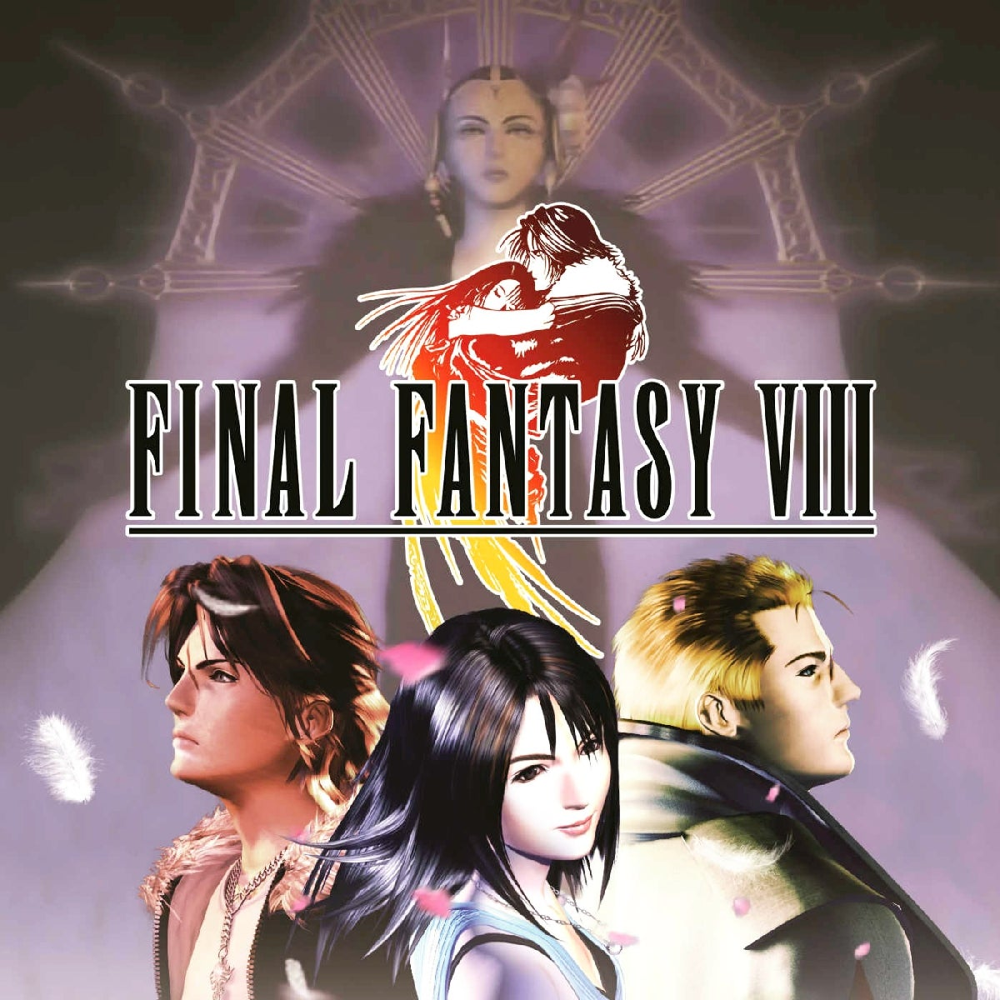

FFVII brought the series into 3D and became a global phenomenon, introducing Cloud Strife, Sephiroth, and the city of Midgar.

The cinematic rebirth of Final Fantasy
FFVII brought the series into 3D and became a global phenomenon, introducing Cloud Strife, Sephiroth, and the city of Midgar.
Known for its realistic art style and the Junction System, FFVIII explored themes of memory and fate.

A return to the series’ fantasy roots, FFIX celebrated the franchise’s history with a heartfelt story and classic designs.